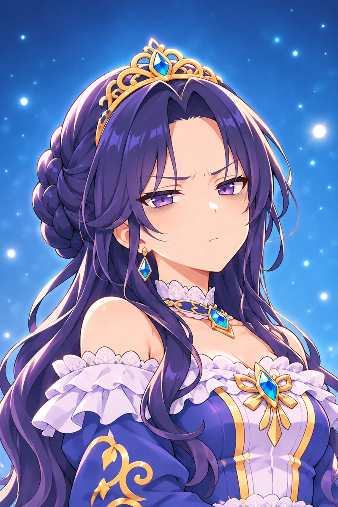
ノースティア
エイセレブ王国 第一王女。生真面目すぎる激務系お姫様
警戒心の塊で、真っ先に「人質になる覚悟」を決める。一番手ごわく、一番ソファに沈みやすい。
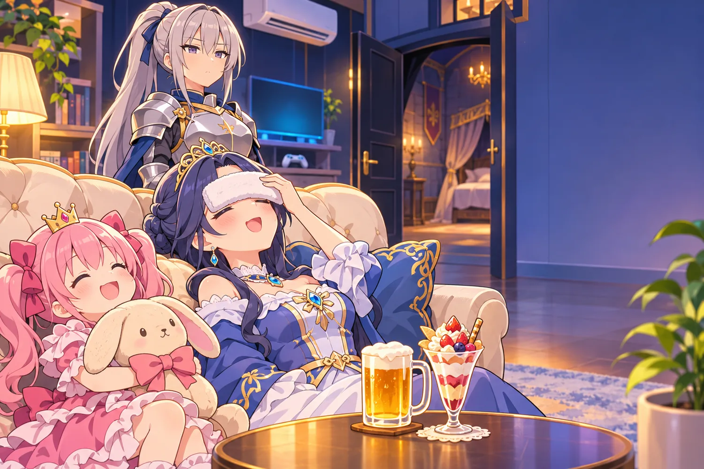
一人で堪能しても、ちょっと虚しい。だから今夜も、異世界のVIPを招く。
『異世界ダメ人間計画』は、選択肢を選びながら読み進めるコメディ系のインタラクティブノベルです。主人公は、異世界の蒸し暑い夏の夜に、なぜか自宅だけが別次元の快適さを誇る「俺」。冷房の効いた部屋、沈み込むソファ、温かいおしぼり、キンキンに冷えたエール。こんな極楽を、一人きりで堪能していても、だんだん虚しくなってきます。
そこで思いつくのが、異世界のVIPを自宅に招いて、この城の凄さをレビューしてもらうことです。招かれるのは、国の頂点に立つ王女や王様、剣聖、聖女といった、普段は決して気を抜けない人たち。「人質にされる」「処刑される」と覚悟して部屋に入った彼ら、彼女らが、涼しさと座り心地に負けて、少しずつ骨抜きになっていく様子を、あなたの選択で導いていきます。
緊張が解けていく過程を笑って読めるコメディでありながら、ゲストごとに、立場の重さや、誰にも言えない悩みが描かれます。読み終えたときに、少しだけ優しい気持ちになれる話を目指しました。
最初は7組のゲストから遊べます。ゲストを読み進めて「堕落ポイント」をためると、さらに4組のゲストが現れます。

エイセレブ王国 第一王女。生真面目すぎる激務系お姫様
警戒心の塊で、真っ先に「人質になる覚悟」を決める。一番手ごわく、一番ソファに沈みやすい。
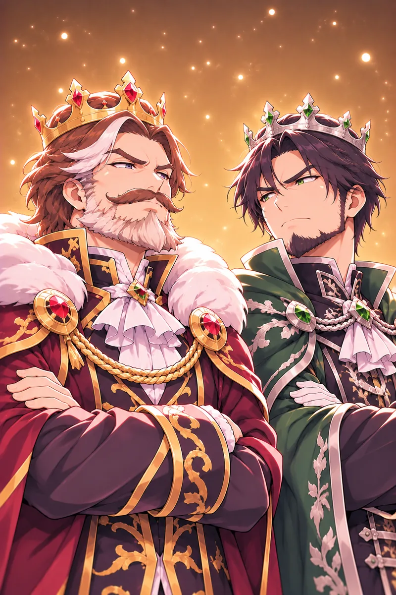
国境問題で一触即発中の、隣国同士の国王コンビ
国境問題で睨み合う、二国の王。同じ部屋に通された瞬間から、見栄の張り合いが始まる。
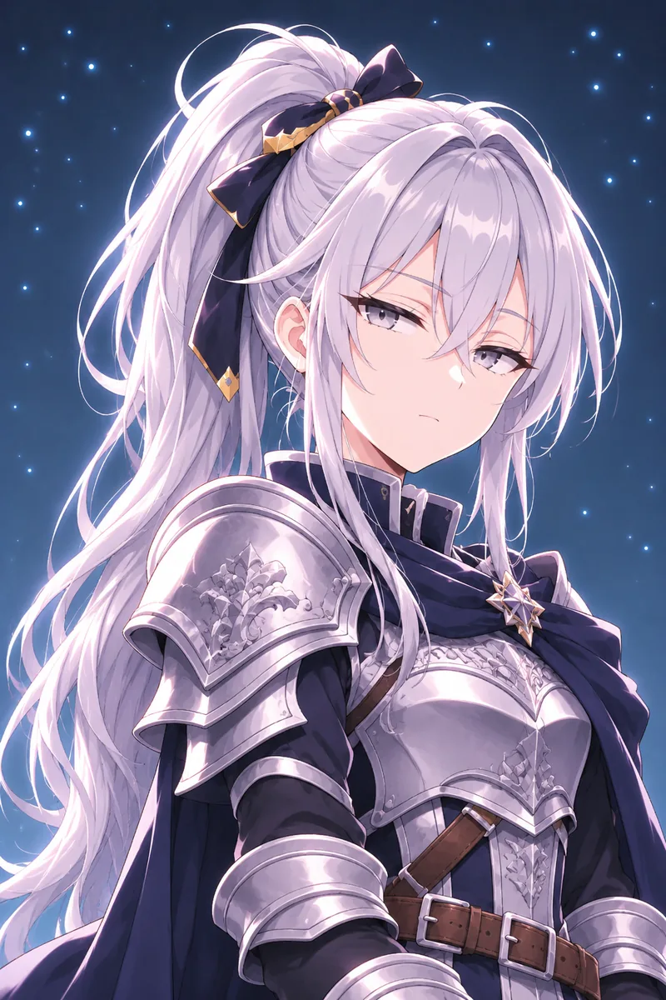
エイセレブ王国近衛剣聖筆頭。表向きは氷のような無表情武人
国で最強の剣士。氷のような無表情が、どこまで保つのか。
極度の本の虫。異世界の物語に娯楽性を求める理屈屋の読書家
分厚い本を手放さない、理屈屋の王女。「物語」に出会ってしまったときの顔は必見。
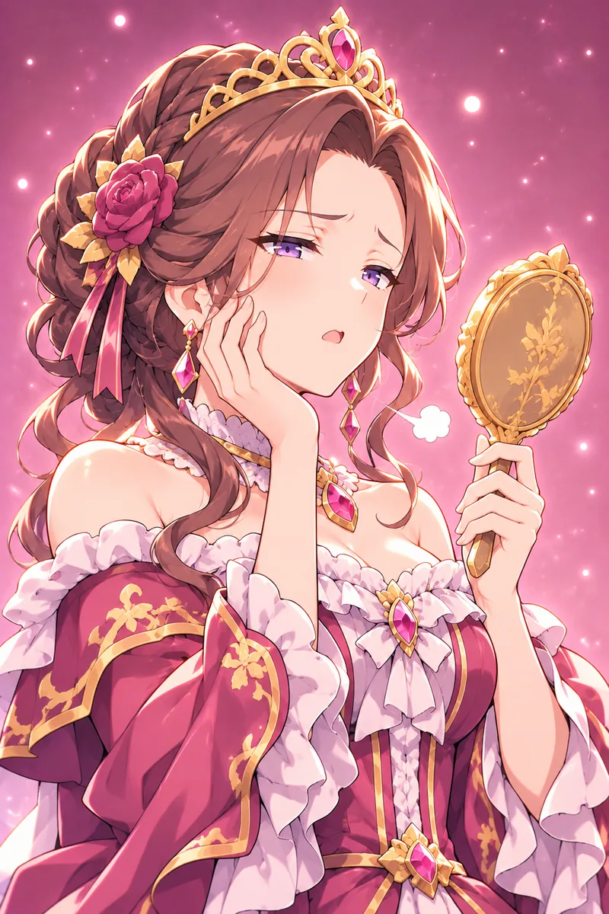
エイセレブ王国王妃。お肌のハリと若さに、夜な夜な鏡の前でため息をつく
若さと美しさに、人知れず悩む王妃。鏡の前のため息が、少しずつ変わっていく。
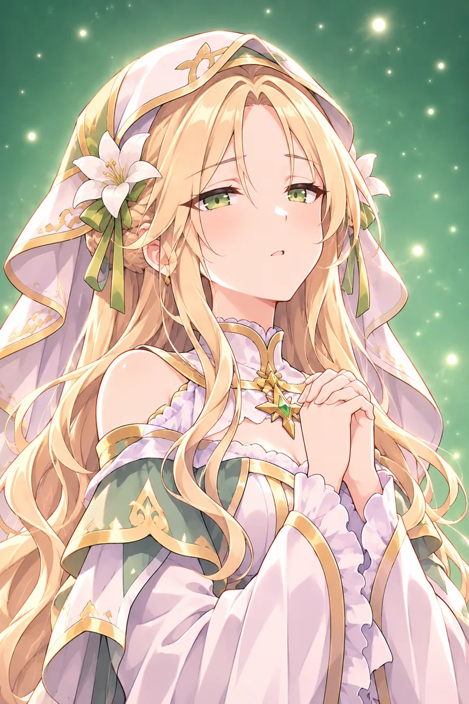
国教会所属の聖女。人を癒す手が、誰にも癒やされたことがない
人を癒やし続けてきた聖女。癒やす側だった彼女が、はじめて「癒やされる側」になる夜。
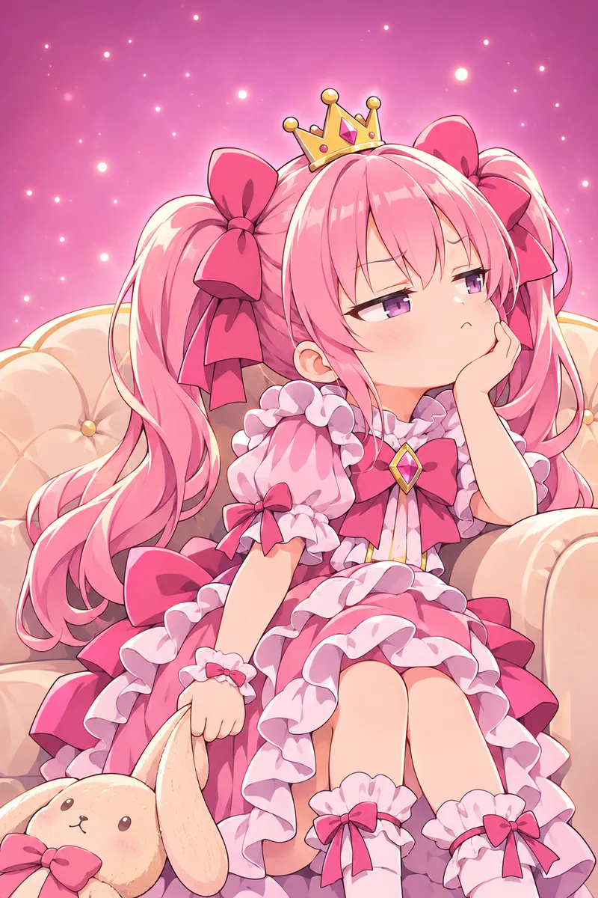
エイセレブ王国最年少、6歳の甘えん坊。『お城は退屈!』が口癖の末っ子王女
6歳の末っ子王女。お城は退屈、と頬をふくらませる。勝負事になると、意外な顔を見せる。
ゲストの様子は、堕落ポイントに応じて、5段階のランクで表されます。ポイントが上がるにつれて、ゲストの態度も、画面の雰囲気も変わっていきます。
| ランク | 目安 |
|---|---|
| 警戒MAX(誘拐犯だと思っている) | 最初の状態。身構えている |
| 困惑(状況が飲み込めない) | 50ポイント以上 |
| 骨抜き(この城の虜) | 100ポイント以上。絵が差分に切り替わる |
| 依存気味(禁断症状ちらほら) | 180ポイント以上 |
| 国宝級ダメ人間(完全に堕ちた) | 250ポイント以上。特別な結末が見られる |
この城には、ゲストをもてなすためのメニューや、設備がたくさんあります。それぞれに、異世界では再現できない理由や、ゲストの反応が書かれた記録ページが付いています。ここでは、そのうちの一部を紹介します。
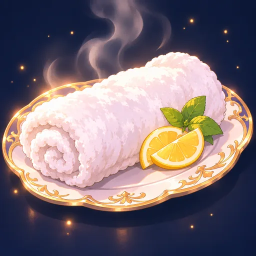
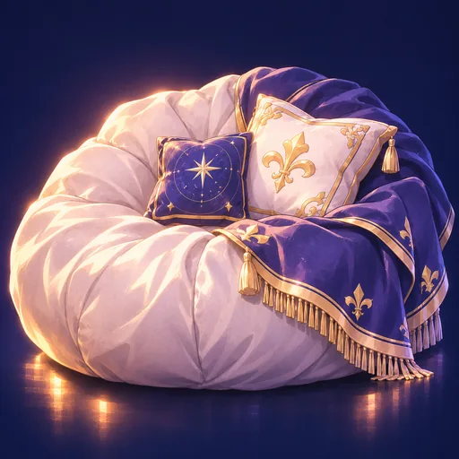
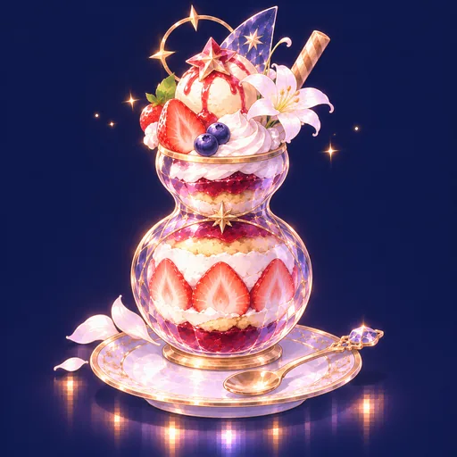
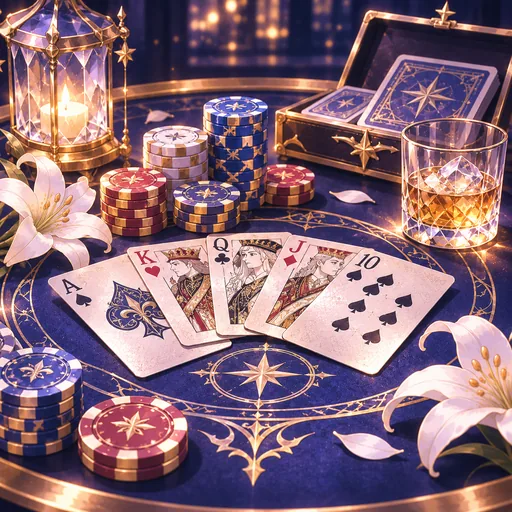
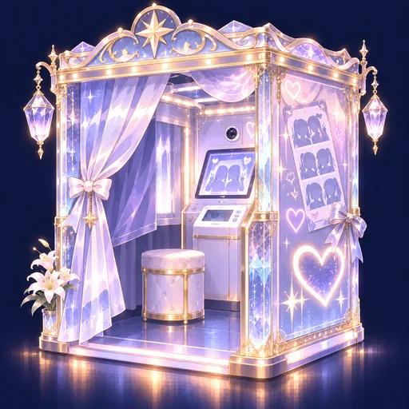
・この作品は、フィクションのコメディです。登場する国、人物、団体は、すべて架空のものです。
・作中に、お酒(エールやビール、ワインなど)を飲む場面があります。お酒は、20歳になってからお楽しみください。作品は、未成年の飲酒を勧めるものではありません。
・作中のイラストは、画像生成AIを使って制作し、作者が選定・調整しています。BGMは、AI音楽生成サービス「Suno AI」で制作しています。
・保存データは、お使いのブラウザの中にだけ保存されます。ブラウザの閲覧データを消去したり、別の端末で開いたりすると、記録は引き継がれません。
はい、すべて無料です。登録やログインも要りません。
はい、スマホでの操作を中心に作っています。タップだけで進められます。パソコンのブラウザでも遊べます。
どのゲストからでも大丈夫です。一番手ごわい王女ノースティアから始めるのも、気楽に楽しみたいなら末っ子のリリィから始めるのも、おすすめです。
画面右上のスピーカーボタンで、オン・オフを切り替えられます。ブラウザの設定によっては、最初のタップのあとに音が流れ始めます。
ゲストを読み終えるたびに、自動でセーブされます。ゲスト選択画面の下のほうに、セーブデータをリセットするボタンがあります。